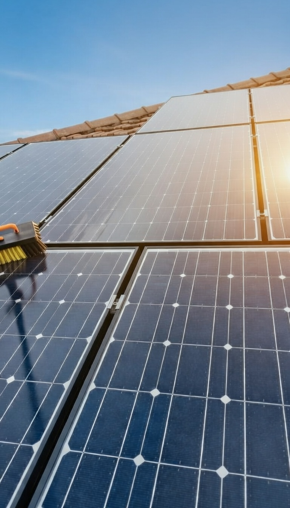
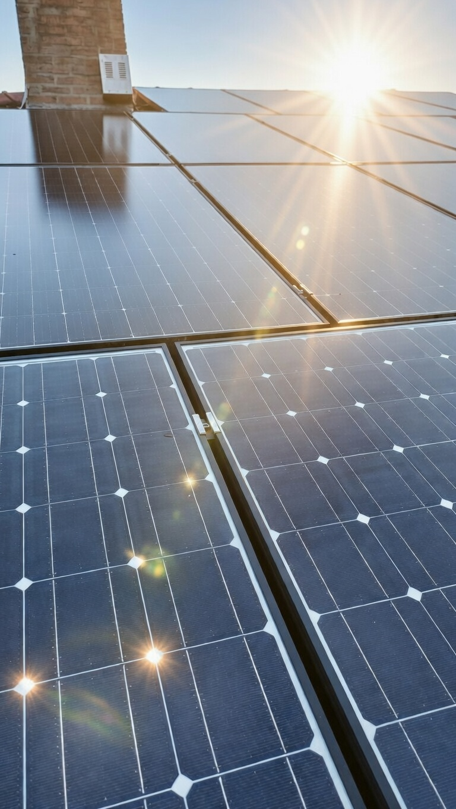
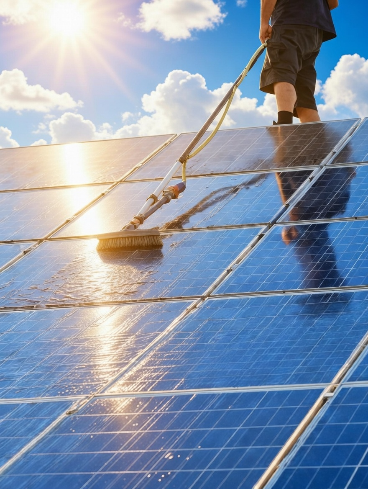

Wist u dat vuil, stof en vogelpoep op uw zonnepanelen tot wel 15% rendementsverlies kunnen leiden? Wij poetsen uw panelen weer spierwit en glanzend schoon met gespecialiseerde technieken.
Onze Werkwijze: Wij gebruiken kalkvrij water en zachte borstels om krassen te voorkomen. Zoals u op onze projectfoto's hieronder ziet, zorgen wij voor een streeploos resultaat waardoor uw installatie weer op volle kracht kan draaien.


